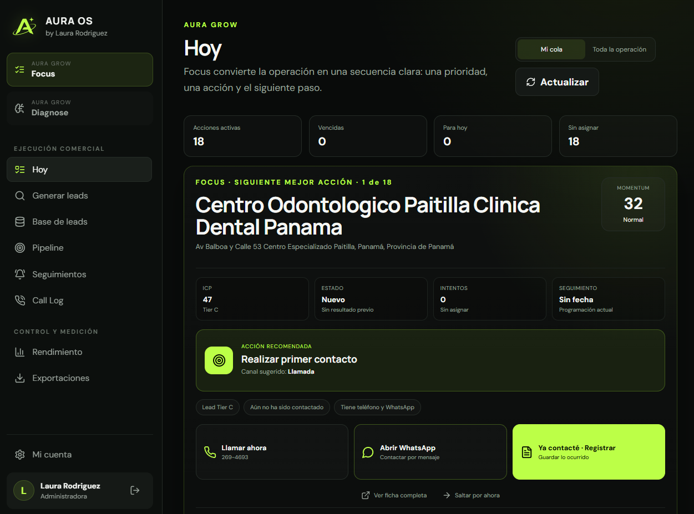

Llega la consulta
Sin registroInstagram, WhatsApp o web.
Growth Strategist · Founder of Aura OS
Ayudo a empresas de servicios a responder más rápido, organizar el seguimiento y convertir más conversaciones en clientes con estrategia, inteligencia artificial y automatización.

El problema real
Una consulta puede estar “atendida” y aun así terminar perdida.
El cliente espera. Recibe información. No compra todavía. Nadie define el próximo paso. Días después, elige a quien respondió y acompañó mejor.
“No siempre necesitas más consultas. Primero necesitas aprovechar mejor las que ya llegan.”
Instagram, WhatsApp o web.
La respuesta depende de quién esté disponible.
Pero nadie dirige la conversación.
La oportunidad queda olvidada.
Ganó quien acompañó mejor.
Lo que cambia
No se trata de añadir herramientas por añadir. Se trata de diseñar una operación que el equipo pueda usar todos los días.
Reducir el tiempo entre la consulta y la primera respuesta sin perder el tono humano.
Cada conversación termina con una acción, una fecha y una persona responsable.
Volver a contactar a quienes mostraron interés, no respondieron o no compraron todavía.
Saber dónde se enfrían las oportunidades y qué acciones realmente generan avance.
Cómo trabajo
La solución comienza con tu proceso real, no con una herramienta de moda.
Reviso cómo llegan las consultas, quién responde, qué se registra y qué sucede después.
Identifico dónde se pierde tiempo, contexto, seguimiento o intención de compra.
Defino mensajes, responsables, automatizaciones y próximos pasos claros.
Ponemos el sistema en marcha, medimos y refinamos lo necesario.
Consulting powered by Aura OS
Aura OS conecta diagnóstico, priorización y ejecución para que una empresa sepa qué oportunidad trabajar y cuál es la siguiente mejor acción.
Conocer Aura OS ↗
Servicio principal
Una evaluación profunda para detectar las tres fugas principales y convertirlas en un roadmap ejecutable.
Antes de comenzar, completa una revisión inicial breve para confirmar si existe una oportunidad clara.
Ver el diagnóstico ↗Recurso destacado
Respuestas automáticas que contestaban pero no guiaban, demoras que rompían el momentum y conversaciones que morían por falta de seguimiento.
Leer el análisis ↗
Sobre Laura
Trabajo en la intersección entre crecimiento, marketing, procesos comerciales e inteligencia artificial. Mi enfoque es convertir ideas y herramientas en sistemas concretos que el equipo realmente pueda usar.
No vendo tecnología por venderla. Analizo el negocio, encuentro la fricción y construyo una forma más inteligente de responder, acompañar y convertir oportunidades.
Preguntas frecuentes
No. La revisión inicial es breve y sirve para entender tu situación y confirmar si el Diagnóstico de Conversión Premium es el siguiente paso correcto.
No. El análisis parte de tu operación actual, ya funcione con WhatsApp, Instagram, hojas de cálculo o un CRM existente.
No. Trabajo con empresas de servicios que reciben consultas y dependen de citas, evaluaciones, reservas o cotizaciones para vender.
Empecemos por el proceso real
Una revisión inicial breve puede revelar si el problema está en la respuesta, el seguimiento o la falta de un siguiente paso claro.